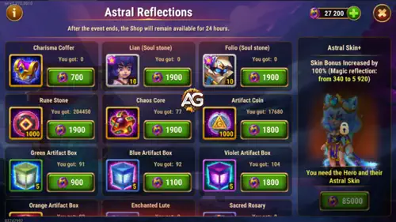

The Astral Reflections event is a Skin+ event focused on Lian. It is basically a two-in-one deal: you need to acquire the base Astral Skin first, and then you unlock the ability to upgrade it to the Skin+ version. This event also features Folio's Astral Skin, which provides +10,650 Armor — a solid defensive boost if you use Folio in your lineup.
Lian's Astral Skin+ grants Magic Reflection, a stat that gives her a chance to completely dodge incoming magical damage and reflect 20% of it back to the attacker. The base Astral Skin provides +2,960 Magic Reflection, while the Skin+ upgrade doubles that to +5,920 Magic Reflection — using the exact same skin stone investment.

Magic Reflection is a defensive stat that gives the hero a chance to completely avoid an incoming magical attack and reflect 20% of that damage back onto the enemy. When it triggers, Lian takes absolutely zero damage from that hit — it is not a reduction, it is a full dodge.
Here is a step-by-step breakdown so there is no confusion:
(Magic Reflection / (Magic Reflection + enemy's main stat)) × 100%
The "enemy's main stat" means the attacker's primary attribute — Strength, Agility, or Intelligence — whichever one is their highest and defines their hero class. So if a mage with 30,000 Intelligence attacks Lian and she has 5,920 Magic Reflection, the chance to dodge and reflect would be: 5,920 / (5,920 + 30,000) = roughly 16.5%. That might not sound huge, but across an entire battle with multiple magical attacks, those dodges add up and can save Lian's life multiple times.
Let me be very clear about something: Lian's primary job in your team is to apply Charm and put enemies to sleep. She is an outstanding crowd control support hero. The longer she stays alive, the more Enchantments she casts, and the longer the entire enemy team stays locked down doing nothing. That is her value.
Because of that, the most cost-effective way to build Lian is to focus on her survivability first. Honestly, even a low-power Lian that stays alive long enough to cast two or three Enchantments is already incredibly useful for your team.
That said, if you want to take your Lian to the next level, the Astral Skin+ is still worth getting. Magic Reflection adds an extra layer of magical damage avoidance that directly helps her stay alive longer against mage teams. It is not going to make a huge difference against physical teams or Pure damage dealers, but against mage-heavy lineups it can be the difference between Lian surviving one more critical second to cast another Enchantment or not.
The reflected damage is a nice bonus too — 20% of a big magical hit going back to the enemy adds up over time.
This is the part where I need to explain very carefully, because a lot of people get confused about the process. There are multiple steps, and if you skip one, you will not be able to buy the Skin+.
I want to explain this in detail because a lot of people ask me "Alexandre, can I just get the Skin+ later for free?" — and technically yes, but let me tell you exactly how painful that path is.
The base Astral Skin is not that bad to wait for. After about three months, it becomes available in Outland free chests, and after roughly six months, you can buy it with Skin Certificates. That is a reasonable free-to-play timeline.
The Skin+ is a completely different story. After the event ends, the only way to obtain a Skin+ is through the Heroic Chest. Here is the reality of the Heroic Chest:
So the bottom line is this: the best time to get any hero's Skin+ is during their Skin+ event. Waiting means months or even more than a year of slow progress with no guarantee. For advanced players, the Heroic Chest grind is especially frustrating — just 1 free chest per day plus 1 from watching a daily ad, and if you miss a day or the 24-hour timer drifts, it gets even worse.
The Astral Reflections event is packed with offers, and I know people always ask me "Alexandre, where is the best place to spend emeralds?" — so let me tell you:
The event features a 55% discount on Outland Chests. This is one of the best deals in the game right now, and here is why: skin stones in Hero Wars Alliance are currently one of the hardest resources to farm. There are so many new skins being released that you will always need more skin stones than you can get through normal daily play. Buying Outland Chests at 55% off is an extremely efficient way to stock up and receive more Charisma Coins.
To take advantage of those discounts, you need emeralds. And during this event, there are x4 emerald purchase offers — meaning you get four times as many emeralds for your money compared to normal prices.
Quick note:
The best place to buy those discounted emeralds is through the official Hero Wars Hub store.
When you buy through the Hub, you get:If you plan to take advantage of the event through the official Hero Wars Hub store., remember to use the code ALEXANDREGAMES
This does not cost you anything extra and helps me keep bringing the blog content and detailed event guides like this one. Thank you!
Once you have secured the Skin+ (or if you could not buy the base skin and have leftover Charisma Coins), here is the best order of priority for the remaining items in the Perfection Shop:
Lian's value comes from keeping enemies asleep — the longer she survives, the more time your team has to deal uncontested damage. Below is a summarized priority table. For detailed explanations of each skin, visit the full Lian Character Guide.
| Skin | Stat | Value | Priority |
|---|---|---|---|
| Default Skin | Intelligence | +1,365 | Very High |
| Romantic Skin | Magic Attack | +10,650 | Very High |
| Beach Skin | Health | +106,645 | Very High |
| Demonic Skin | Magic Defense | +10,650 | High |
| Solar Skin | Armor | +10,650 | Medium High |
| Lunar Skin | Crushing | +5,920 | Medium |
| Astral Skin / Skin+ | Magic Reflection | +2,960 (base) / +5,920 (Skin+) | Medium |
Focus on Default, Romantic, and Beach skins first for maximum impact. Demonic Skin comes next for magic defense. The Astral Skin+ is a situational but worthwhile investment, especially against mage-heavy teams.
Did you like our Lian Astral Reflections Skin+ Event Guide? Is there something you didn't understand or would like to suggest changes to? We invite you to join our comment section on the Alexandre Games Blog page. Feel free to express your opinion, clarify your doubts, and share your suggestions.
Click the button below to get started: